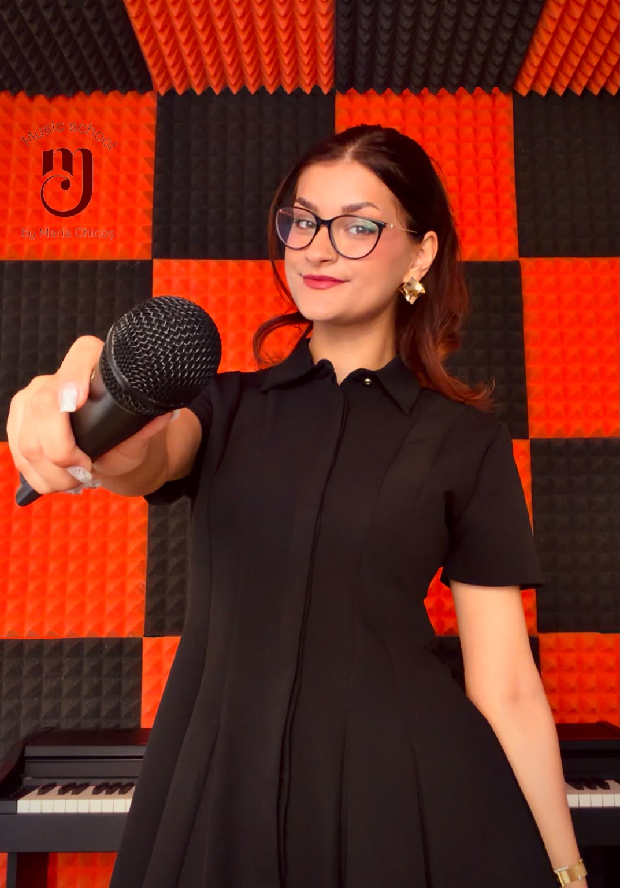

Școală de muzică
Music school
Descoperă muzica în ritmul tău
Lecții de pian, canto și teoria muzicii pentru copii de la 4 ani, adolescenți și adulți — într-un mediu prietenos, gândit pentru fiecare elev în parte.

Despre profesoară
Maria Chicoș este studentă a Universității Naționale de Muzică din București și are peste 15 ani de experiență în muzică — de la atestarea în canto clasic, până la scenă, concursuri și predare.
Fiecare elev are propria melodie de descoperit.
Citește povestea Mariei →Ce poți învăța
De la primele acorduri până la piese complexe, lecțiile sunt adaptate nivelului și preferințelor fiecărui elev.
Copii 4+ · adolescenți · adulți
Tehnică vocală, respirație și interpretare, într-un cadru care încurajează încrederea în scenă.
Copii 4+ · adolescenți · adulți
Bazele teoriei explicate simplu și aplicat, pentru o înțelegere solidă a muzicii pe care o cânți.
Copii 4+ · adolescenți · adulți
De ce Melody Core
Abordare modernă, adaptată fiecărui elev
Repertoriu ales în funcție de preferințele muzicale
Prezență scenică și gestionarea emoțiilor
Un mediu prietenos și încurajator
Ce spun elevii
Unde ne găsești
Drumul Gura Siriului 22Sector 3, București
Lecțiile au loc exclusiv față în față, la studio. Programează prima lecție gratuită și stabilim împreună cel mai bun interval orar.